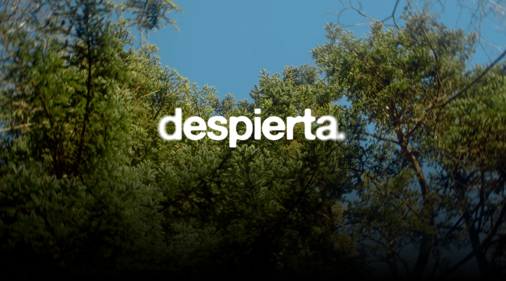
A short film written, directed, and edited independently. A letter to anyone who has ever felt stuck — and a reminder that the only thing standing between where you are and where you want to be is the decision to move.
Despierta follows Pau, a young man trapped in the monotony of his daily routine, drifting through his days questioning the purpose of everything around him. After a conversation with his friend Alex — whose clarity and love for life couldn't be more different from Pau's hesitation — he decides to break from his routine and travel to the mountains. Something he had always wanted to do, but never done.
The film was born from personal reflection. Pau and Alex represent two conflicting voices that exist within the same person — the one that holds back, and the one that knows exactly what it wants. The leaf that appears throughout the film is the film's central metaphor: its journey from the tree is entirely uncertain, just like ours. You never know where the wind will take you.
Shot independently in Barcelona with a cast of two and a crew of four. Every creative decision — from the script to the colour grade — was made with intention.
Despierta is both a technical exercise and a personal statement.
Duration: 6 min 41 s.
Starring Oscar Fortea Vergel. Original score by Daniel Ballestero López.
Posters
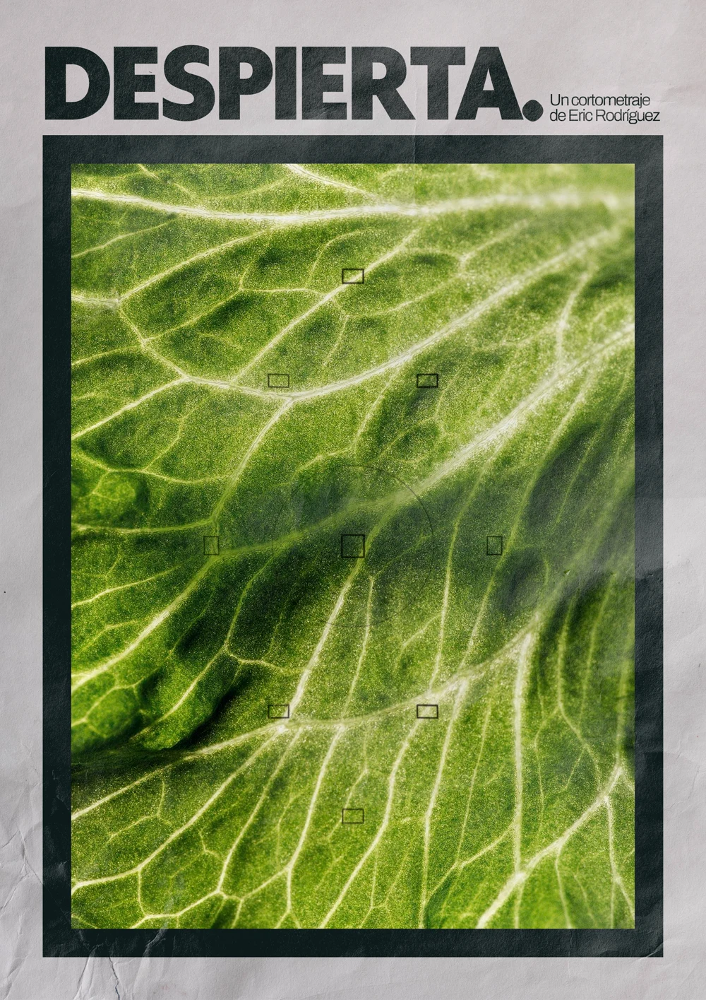
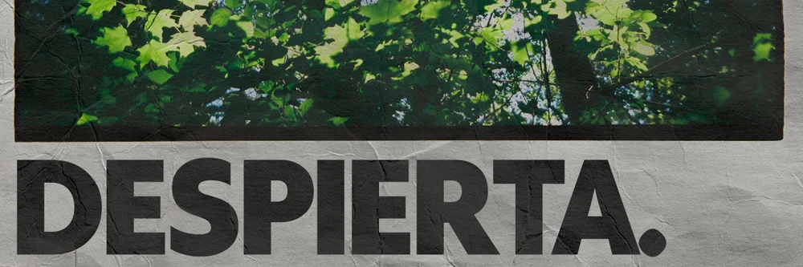
Trailer
Film Stills
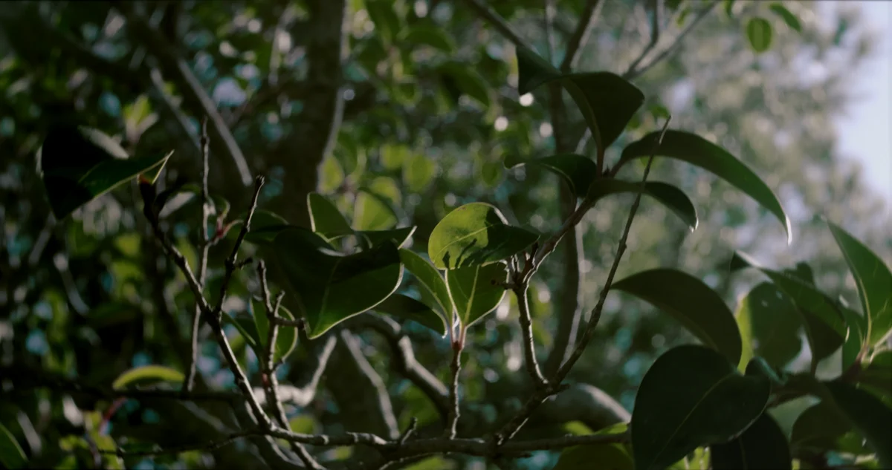
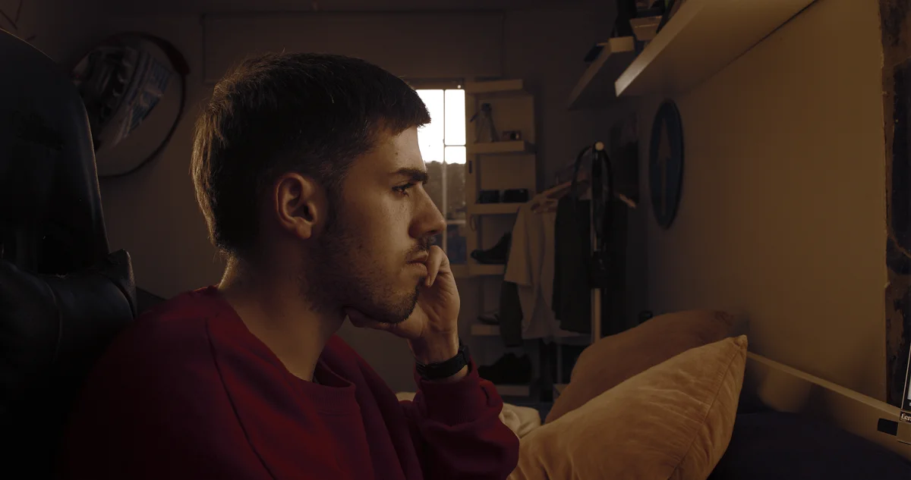
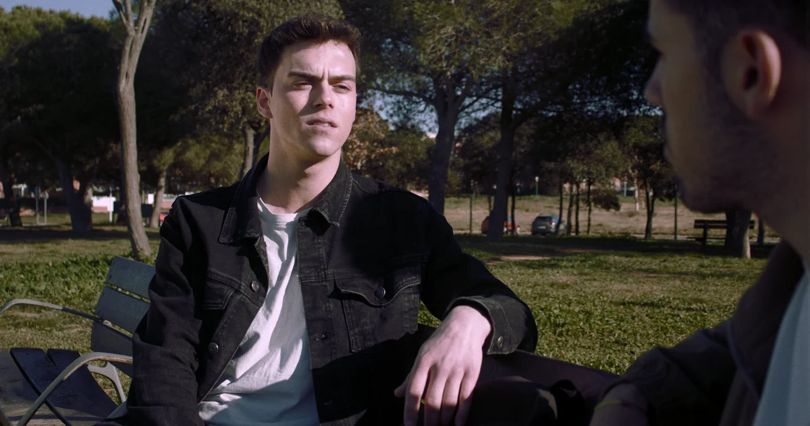
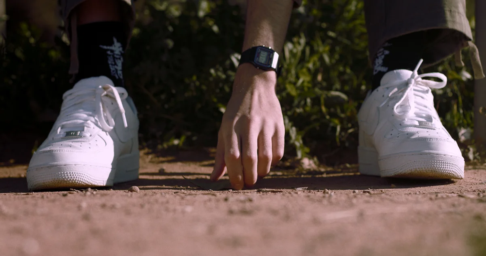
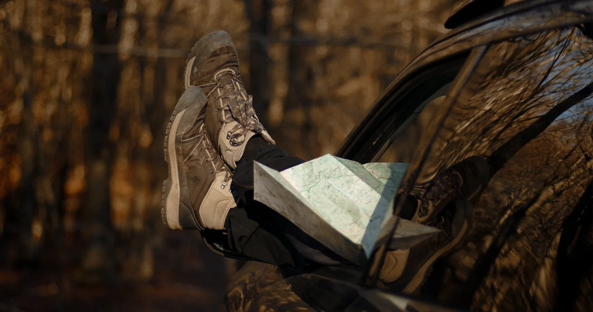
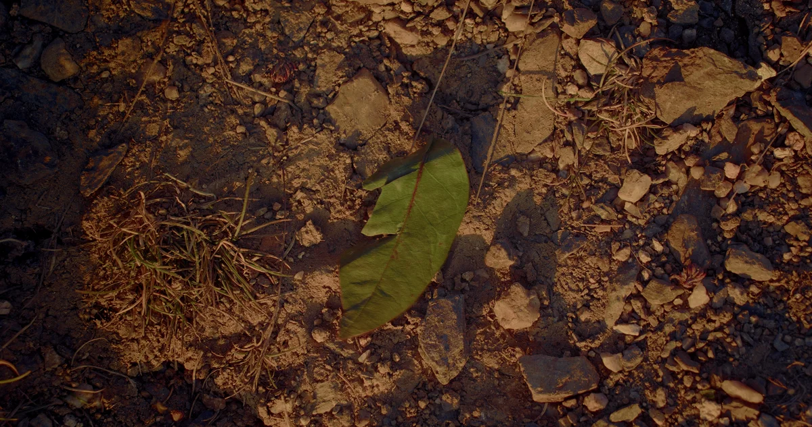
Behind the Scenes
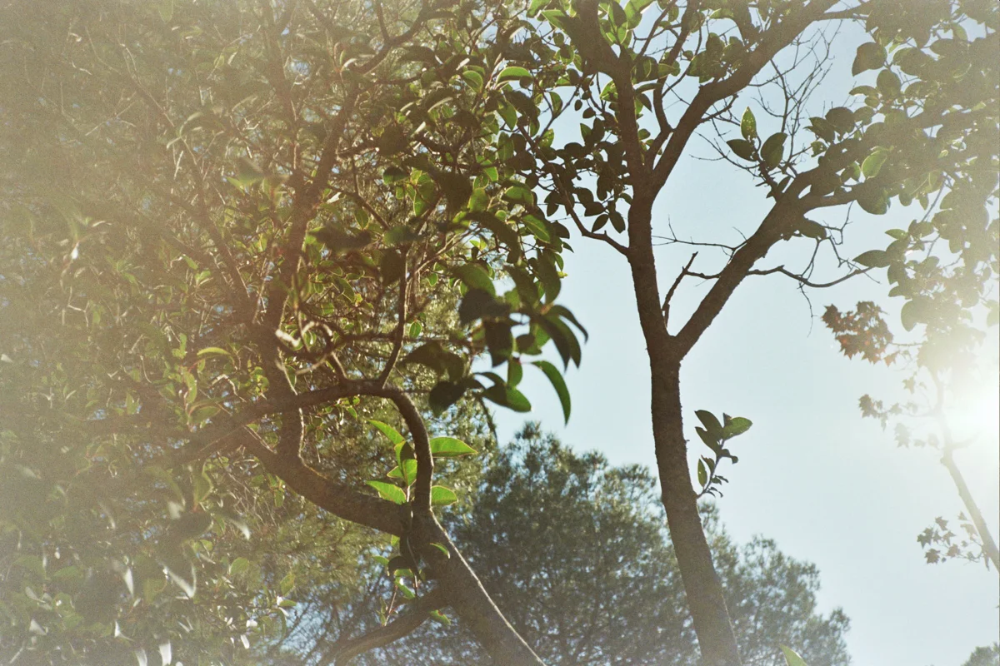
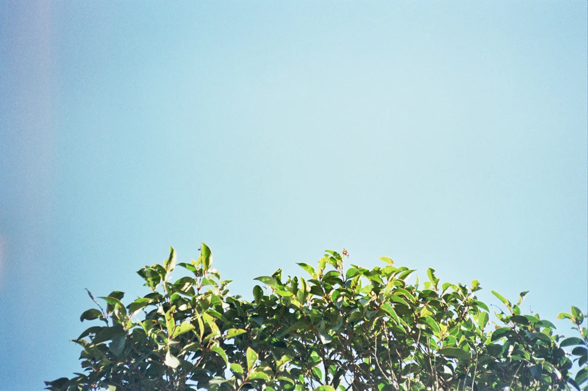
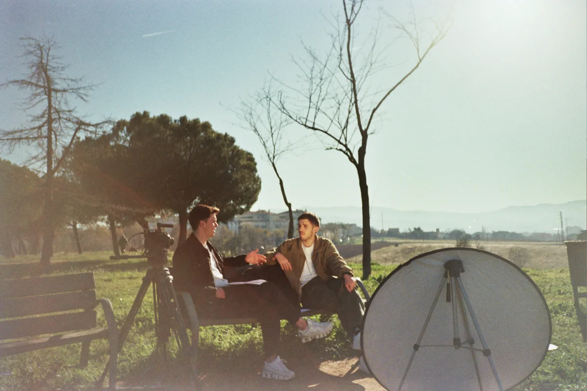
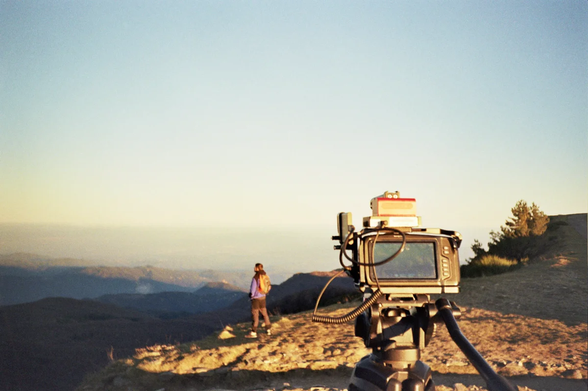
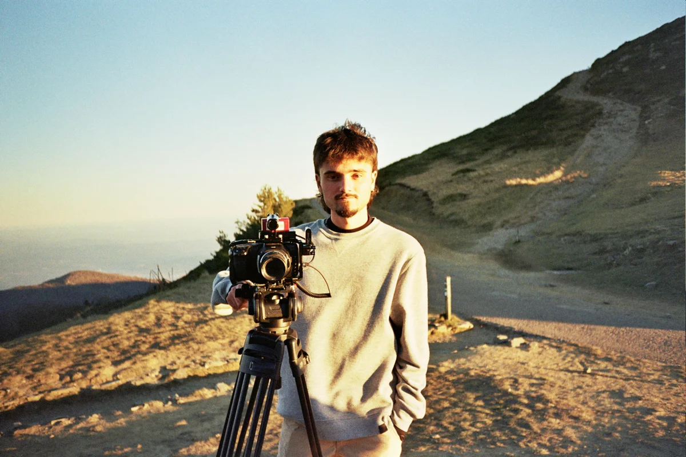
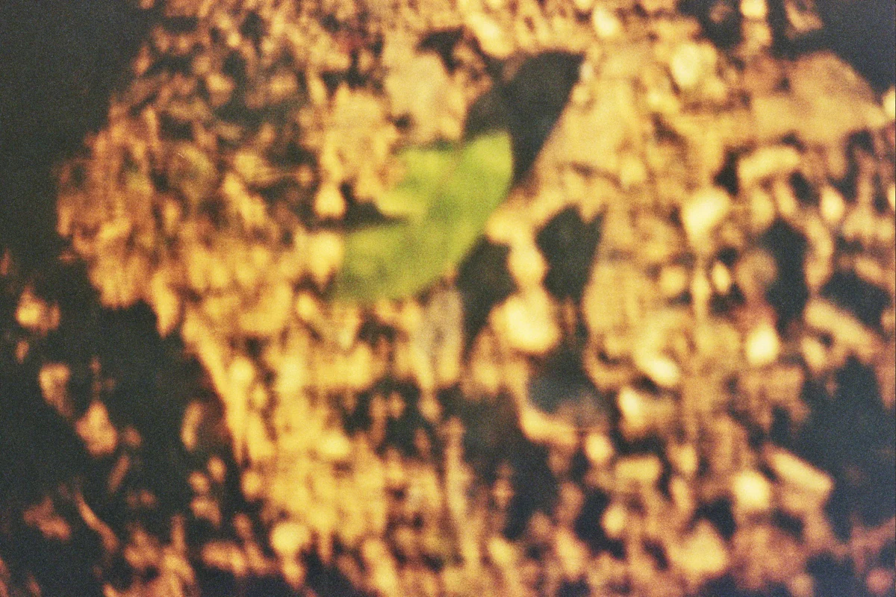
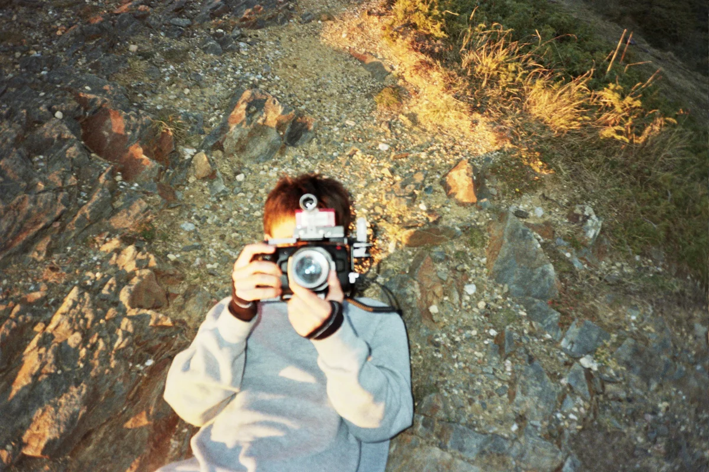